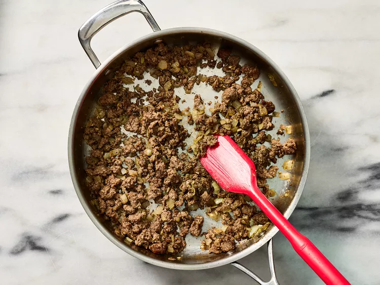
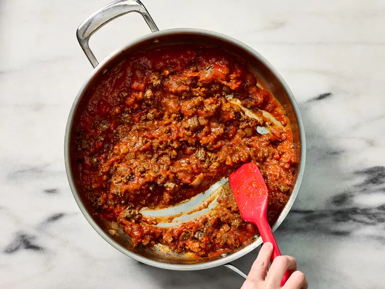
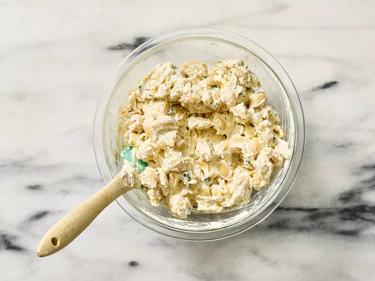

Final Research & Content Collection
Recipe Title: Unstuffed Shells Pasta Bake
Research Document: View Research Evaluation
Recipe Overview
This Unstuffed Shells Pasta Bake offers all the flavors of traditional stuffed shells without the hassle. Tender pasta shells are coated in a creamy blend of ricotta, cream cheese, and Parmesan, layered with a savory marinara and ground beef sauce, and topped with golden, bubbling mozzarella.
Serving Size: 4 servings (can be doubled for 8 servings)
Dietary Information: Contains dairy, gluten, and meat. Not suitable for vegan or gluten-free diets.

Ingredients
- 12 ounces medium pasta shells (24 ounces for 8 servings)
- Cooking spray
- 1 tablespoon extra-virgin olive oil
- 1 pound ground sirloin
- 1 1/4 teaspoons kosher salt, divided
- 1 teaspoon dried Italian seasoning
- 1/2 teaspoon freshly ground black pepper
- 1 yellow onion, chopped
- 1 1/2 tablespoons minced garlic
- 1 (24-ounce) jar marinara sauce
- 1 cup whole-milk ricotta cheese
- 1 (8-ounce) package cream cheese, softened
- 1/2 cup freshly grated Parmesan cheese
- 1/4 cup fresh basil leaves, chopped
- 1 large egg, lightly beaten
- 1 cup shredded mozzarella cheese
Instructions
- Preheat oven to 350°F (180°C). Lightly grease a 13x9-inch baking dish with cooking spray.
- Bring a large pot of salted water to a boil. Add pasta shells and cook until tender yet firm, about 9 minutes.
- In a large skillet, heat oil and cook ground sirloin, onion, and garlic until browned. Stir in marinara sauce and simmer for 5 minutes.
- In a mixing bowl, combine ricotta, cream cheese, Parmesan, basil, egg, and Italian seasoning.
- In the prepared baking dish, layer half of the pasta, half of the meat sauce, and half of the ricotta mixture. Repeat layers.
- Sprinkle mozzarella cheese evenly on top and bake uncovered for 20-25 minutes, or until golden and bubbly.
- Garnish with fresh basil and serve hot.
Storage & Reheating
Storage: Store leftovers in an airtight container in the refrigerator for up to 4 days.
Reheating: Reheat in the oven at 350°F for 10-15 minutes or microwave individual portions for 1-2 minutes.
Step-by-Step Images
  


Peer Evaluation Summary
Key Insights
- ✅ The step-by-step instructions are clear, but more images could enhance usability.
- ✅ The recipe is easy to follow, but first-time cooks may need to refer back to ingredients.
- ✅ Cooking time is manageable, and the preparation steps are well-structured.
- ⚠️ The dietary restrictions were not clear in the original version (fixed in this update).
- ⚠️ Storage & reheating instructions were missing (added in this version).
Final Research Document
View the complete research evaluation and feedback document here: Google Doc Link